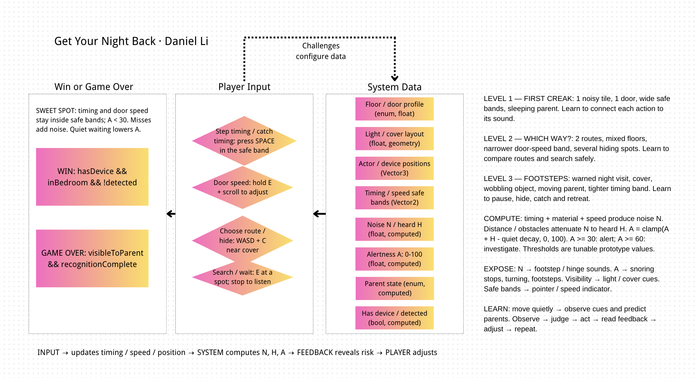
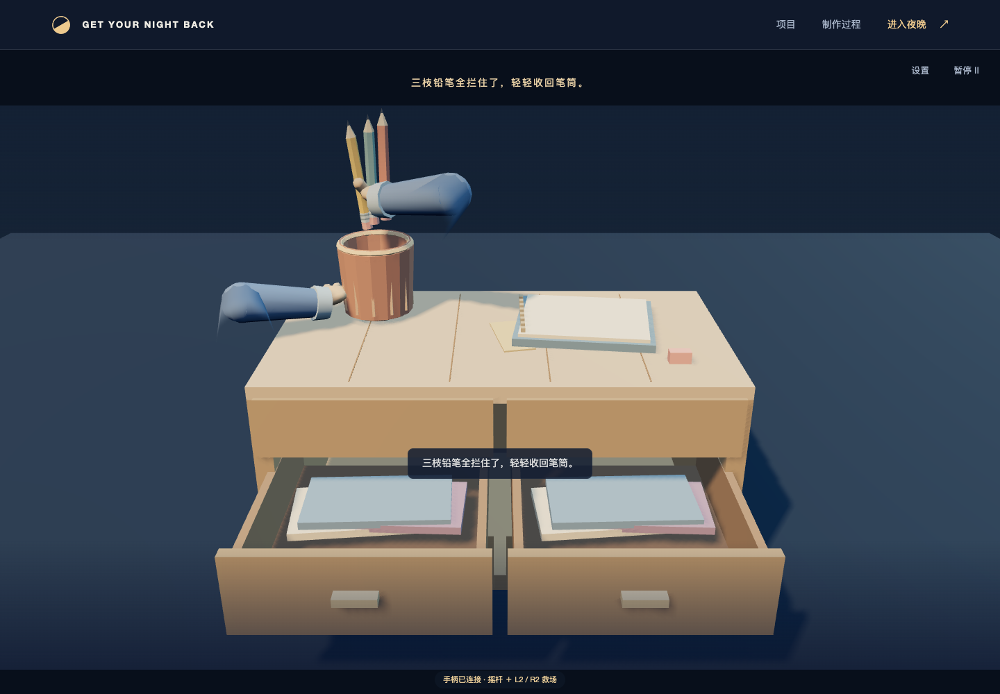
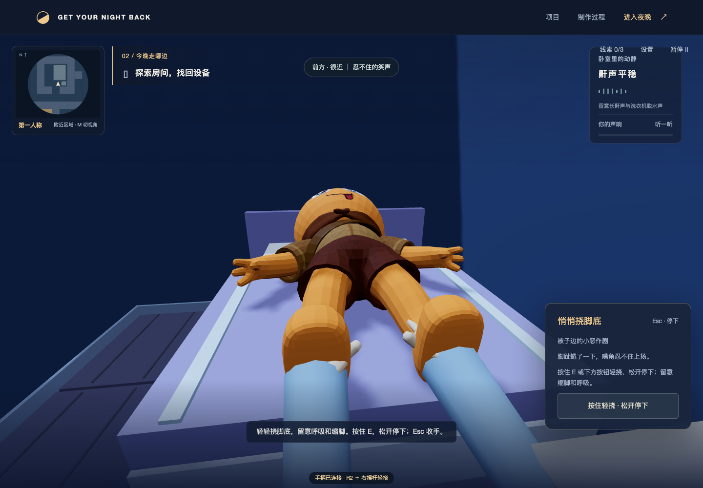
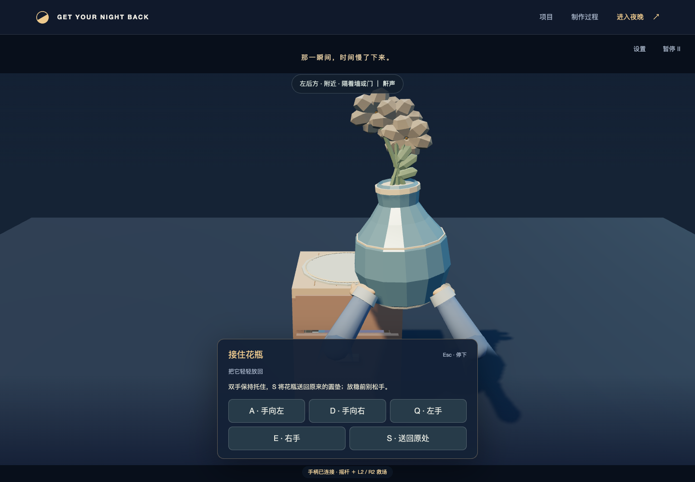
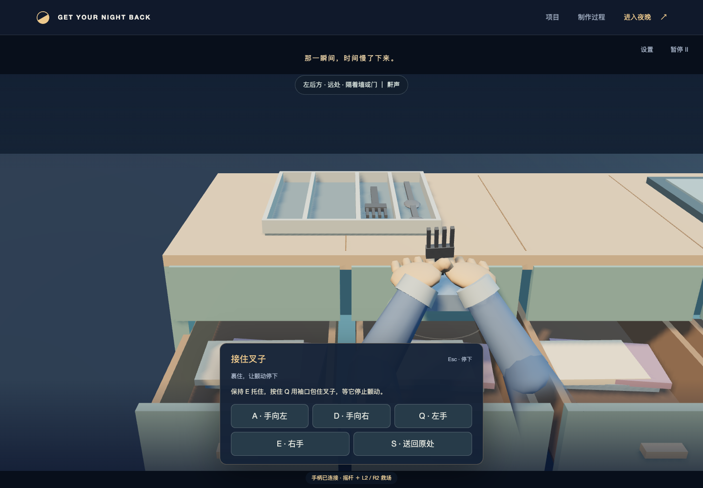
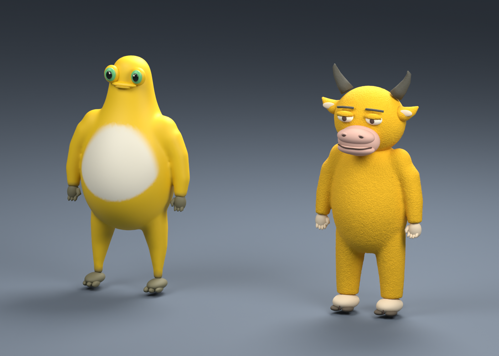

第一声吱呀
穿过客厅，探索东侧书房和两个藏点与可翻找书架。观察三根普通弹子的接缝，顶起后松手开锁。
学习：落脚与听门轴CGDD · GAME DESIGN FROM EVERYDAY LIFE
手机被藏起来了，夜晚却还没结束。
一间住宅，几声吱呀。你的任务是把设备带回卧室，途中学会听懂这间房子。

01 — DESIGNER STATEMENT
这个项目来自 Daniel 初中时的生活经验：晚上取回被家长藏起来的电子设备。看似只需要动作轻巧，实际上还要判断木地板是否会响、门轴适合怎样推、父母是否已经熟睡，以及突然有脚步时能躲到哪里。
游戏把这些判断转化成可尝试、可听见、可调整的行动。声音既是行动反馈，也是判断环境的依据：太响会留下风险，合适的背景声也能掩护行动。扩建后的住宅以附近小地图引导探索；家具按居住用途成组摆放，通道与模型对应。家长会走动、停看，听见明显声响后转去调查；蹲行、地板与门轴的不同声音，让路线选择有实际后果。
02 — THE SYSTEM
地板、门轴、光线、家具遮挡和设备候选藏点。相同动作在不同位置，可能发出不同的声音。
方向、落脚时机、开合门的施力、搜索与停下，以及蹲到家具后。物件掉落时要看清落点：双手扶正花瓶、压住铁盒盖、裹住叉子止响，或用手掌拦住滚走的铅笔。
声响经过距离和墙体衰减，影响父母警觉。鼾声、床板声、脚步和暖光提示状态变化，并配有文字反馈。

学生原始系统图 · 点击查看大图。当前版本已按学生要求删除喝水量变量；未加入体力条。数值为可调整原型参数。
找到设备只是中途目标。回到自己的卧室安全区域，且尚未被识别，才完成这一夜。
声音会引起警觉和检查。只有父母在无遮挡的近距离视线里持续看见玩家约 0.25 秒，就会判定失败。
NEW / 听清房子，也管住双手
木地板的轻叩、瓷砖的脆响、地毯的闷声来自真实录音。转头听方向，隔着门声音更闷；短时字幕也提示刚响起的方向与远近。
衣柜可以分别给自己和家长换装。家长熟睡时靠近床尾，轻轻挠两下；一旦脚缩起来、鼾声停了，就该考虑收手。
花瓶要双手扶正，铁盒要托底压盖；归位时摇杆按画面上下左右移动，向上越过桌沿、左右对准原垫，再向下轻放。叉子要用袖口止响，铅笔要按滚动路线逐枝拦住。手柄用摇杆与双扳机，键鼠也有对应操作。


DUALSENSE / 触感也有轻重
R2 的阻力跟着门轴涩点变化，轻颤不是固定节拍。收力减弱，松手释放。走路与蹲行不再震动，触感留给开门、开锁和接物等操作。
花瓶倾斜时，两侧托重不同；放回台面时逐渐卸力。铁盒压住盖子、叉子裹进袖口，手里的细颤也跟着停下。
每接住一枝铅笔，轻轻点一下；手机来电、摸猫和床边恶作剧也有各自反馈。设置里可以分别关闭震动和扳机阻力。
自适应扳机需 USB DualSense 与桌面 Chrome / Edge。在“夜间设置”用鼠标点击连接，并在浏览器弹窗中选择设备；普通震动按设备支持回退。用户已反馈原扳机手感可用；新的门声与撞停曲线仍需试玩。
LISTEN / 手扶住，听门轴
靠近门按 E / □，开启后也能轻轻关上；R / L1 换开合方向。按住 E 或画面逐渐施力，松手停下；手柄轻压 R2，压得更深就更用力。慢推时轻轻咯吱，中速经过涩点明显发响，快推时门轴声又轻下来；一直大力推到底会猛撞限位门框，巨响与手里的反冲同时出现；快全开时收力、放慢最后一小段，就能轻轻停住。自适应扳机仍保留原来的涩点阻力。
看门扇和门缝，不用盯速度条。门边有人时会防夹，家长先退开门扇扫过的位置，等你松开把手后再通行；正常视线识别仍在继续。Esc / ○ 随时退出，R / L1 可反向。

UP CLOSE / 近一点，慢慢找
花瓶先晃、双手接住后缓冲，花枝还有余摆；铅笔分路滚到桌沿，拦住或落地都能看到连续的动作。远景与近景共用花瓶柜、餐具格和文具模型；接住后送回原垫、原格或笔筒，手臂用固定长度弯肘。

V / 手柄 R3 切换第一人称与近景第三人称。鼠标或右摇杆转头，镜头避开墙壁与家具；M / △ 查看全景，再按一次返回刚才的近景。
翻找会拉近镜头、滑出抽屉，双手拨动物件或抽出书本。开锁与翻找时，屋里的时间照常流逝；听到脚步可按 Esc / ○ 停下。
衣柜加入奶龙、奶白色奶蛙与奶鼠的自制游戏改编外观。猫也换成 Quaternius 的圆润低多边形模型，并保留跟随、蹭腿和玩具互动。


LITTLE CLUES / 新的夜探选择
柜锁直接露出弹子与弹簧。A / D 或左摇杆换针，E / R2 轻轻顶起，接缝齐平时松手。遇到腰形弹子卡肩，Q / L2 卸力；屋里的脚步不会等你。
靠近可闻的长鼾声或脱水声，确认掩护再通过木板。也可以启动收音机、玩具鸭，趁延迟响起前离开，观察家长是否听见并去查看。
屏幕亮起，有人来电。停下按住 E / □ 1.2 秒静音，再找机会返程。来不及也能补救，但铃声会引来注意。

表现与意外
找到设备，还要安全带回卧室。未完成时只记录练习表现。
声音控制、落脚时机、推门和接物各有依据。结算给出分项和原因，探索与等待不扣分。
听清脚步，借家具遮挡。评分鼓励观察和调整，没有竞速倒计时。
松动地板与周围颜色一致，受力声才是提示。翻找餐边柜等家具时，可能发生与物件有关的意外；特写结束后恢复原视角与搜索进度。

03 — THREE DIFFERENT NIGHTS
穿过客厅，探索东侧书房和两个藏点与可翻找书架。观察三根普通弹子的接缝，顶起后松手开锁。
学习：落脚与听门轴书房、餐厅、储物间和洗衣间，五个可能藏点。收纳柜里多了腰形弹子，卡住台肩时需要卸力再顶起。
学习：路线与搜索共用压片让过顶影响相邻弹子；父母仍会起夜巡视，开锁和翻找时随时听脚步停下。
学习：停下与应变本版按学生试玩反馈扩大探索范围。时长取决于搜索、等待和重试，不设强制倒计时；人类游玩时长仍待测量。
THE HOUSE CAT / 家里的小跟班
圆滚滚的橘猫会悄悄跟来，停下蹭腿；靠近花瓶时，又忍不住压低身子准备起跳。你可以绕开，也可以摸摸它，或者把玩具球丢向另一边。
靠近 E / □ 安抚，听到呼噜声后，猫会安静坐一会儿。猫不会把你的路堵住。
Q / R2 丢出软球，让猫暂时离开你的路线。前方没有落点就换个方向，不需要管理物品栏。
起跳前有蓄势和提示，安抚、玩具或退开都能中断。真碰到了花瓶，还可以在慢动作里伸手接住。

WARDROBE / 十一套夜间外观
主菜单皮肤衣柜先选择“我自己”或“家长”，分别换装、保存。新增参考图重建的金黄圆肚蛙与金黄小牛，保留奶龙、奶蛙、奶鼠、围巾夜行、螃蟹侦察员、偷吃小厨师、纸箱潜行员、抱枕骑士和晚安星星。选择后可旋转三维预览，确认“穿上这套”才会更换，并保存在当前浏览器。
十一套全部可选，只改变所选角色外观。纸箱不能让家长认错，抱枕也不会降低声音；移动、潜行与评分规则保持一致。支持鼠标拖动和 PS5 手柄选择、旋转及确认。

CONTROLS / DUALSENSE
PS5 手柄通过可传输数据的 USB 线连接电脑，在游戏页面按一下 × 识别。左摇杆移动，右摇杆转头；□ 交互，× 落脚，左摇杆和双扳机处理物件掉落，○ 蹲行与取消，△ 切换全景，Options 暂停。靠近门按 □ 抓住门把，再轻压 R2 开合门，压深更用力，松开就停；L1 换方向。
菜单可用方向键、× 和 ○ 操作；设置内可调手柄转头速度与摇杆死区。断开手柄会暂停，重新接入、松开按键后按 Options 继续。浏览器若尚未允许声音，点击页面的开启声音提示一次。
LISTEN / v0.14.6
真实木板录音带来轻压、轻落与踩响的不同质感。同室细节清楚，隔墙或关门后低沉；门洞绕来的声音和瓷砖房的余响，也会改变你听见的方位。转头比较父母脚步的方向与远近，靠近鼾声或脱水声，等它足够盖住落脚再走。父母听觉与掩护遵守同一声传播规则，视线依然危险。
录音来源与许可 ↗04 — HUMAN × AI